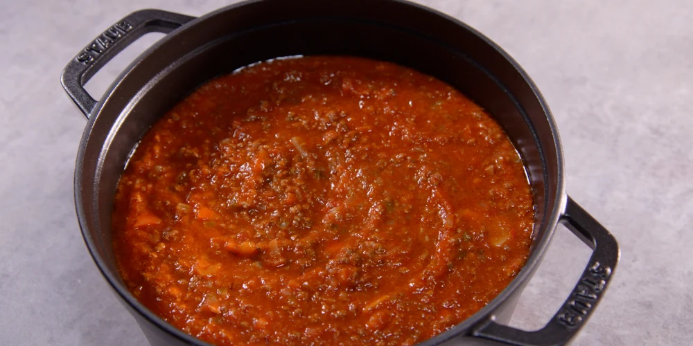

Sauce Bolognese

Description
Traditional italian beef tomato sauce used in a variety of dishes.
Ingredients
- Bag of italian stir fry veggies
- Red wine
- Garlic
- Fresh Basil
- Bouillon cubes
- 500g grounded beef
- 700g canned tomatoes
- Pepper, salt and oregano to taste
Preperation
- Add some oil in a big pan and put heat to high.
- Add the grounded beef and fry to taste.
- Add garlic to taste.
- Add the vegetables.
- Cut Basil leaves to small pieces and add them.
- Boil some water in the meantime.
- Pour 1 cup of wine over the mix and let it reduce.
-
Add some water, canned tomatoes and 2 bouillon cubes, stir good to
prevent burned food.
- Once its boiling, reduce heat to medium-low.
- Add pepper, salt and oregano to taste.
- Simmer for a few hours
-
Serve with spaghetti or use it in a Lasagne. Can easily be frozen.
Back